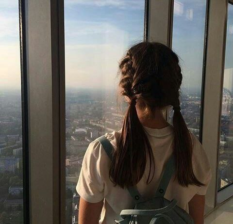

ABOUT

Entering college is not easy, especially when you have to consider so many important things—one of the most crucial is taking the course that best suits you and where you believe you’ll succeed.
Ever since I was in kindergarten, I’ve always been someone who loves to learn and gain knowledge. That’s why I once dreamed of becoming a teacher—because one of my favorite things to do was share what I knew with others.
When I entered high school, that dream shifted. I began to see myself becoming a chef because I found so much joy in the kitchen, helping my mom and dad cook. It was a place where I felt happy and fulfilled.
That passion led me to choose the TVL - Home Economics strand in senior high school. But what I didn’t expect was that choosing that path would eventually guide me toward the field of Information Technology (IT).
Now, here I am in my third year of college, pursuing a Bachelor of Science in Information Technology. At first, I wasn’t sure if I had made the right choice. I really struggled—physically, emotionally, mentally, and especially academically—during my first two years.
But after accepting the fact that this is the course I chose, I slowly started to love it. It wasn’t something I was forced to love—it was something I grew to love. And now, after three years in college, I finally know what I want to pursue… and I’m hopeful that one day, I’ll achieve it.
Hi, my name is Jennica Owen Recio, but you can call me Nika—a 22-year-old student from Cavite State University - Silang Campus, and your aspiring web developer and designer.
I’ve discovered a genuine love for creating websites, especially using HTML, CSS, and JavaScript. There’s something so fulfilling about turning ideas into visual, interactive experiences on the web. I'm eager to learn more and continue exploring everything related to web development—from design principles to coding best practices. Every day is an opportunity to grow my skills and get better at doing what I love.
What started as just a school requirement eventually became a passion. I find magic in starting with a blank screen and turning it into something creative, meaningful, and functional. Whether it’s styling a page, building responsive layouts, or adding interactivity, I enjoy every part of the process.
I’m constantly curious and excited to explore more—whether it’s learning front-end frameworks, improving user experience, or diving deeper into design tools. I want to keep challenging myself, creating better websites, and learning everything I can about this field.
My goal is to become a skilled and creative web developer who not only builds functional websites but also designs ones that truly speak to people and leave a lasting impact. I know I still have a long way to go—but I’m excited for the journey ahead.
Skills
HTML
90%CSS
70%JavaScript
30%